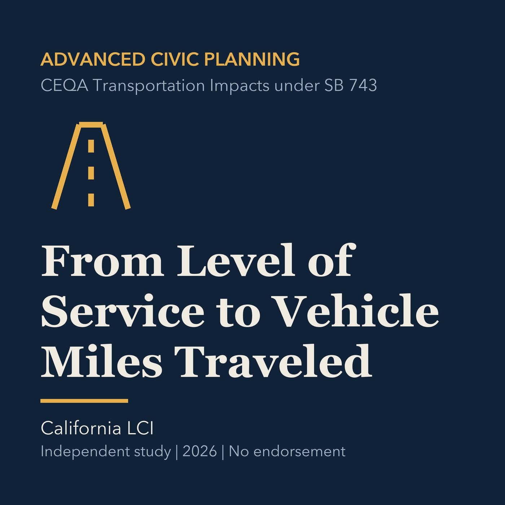

EPISODE 24
From Level of Service to Vehicle Miles Traveled
Distinguishes traffic operations from environmental transportation impact under current guidance.

- Stable GUID
aabee8f3-cede-5696-9cac-8ba7d4a793aa- Release
- advanced-civic-planning-v2026.3
- SHA-256
c08157fa4643e0369f37f07206a5d505b8d8c6856dea033d566030a2a23badfa